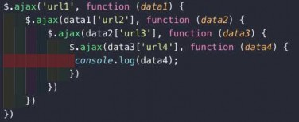
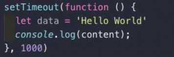
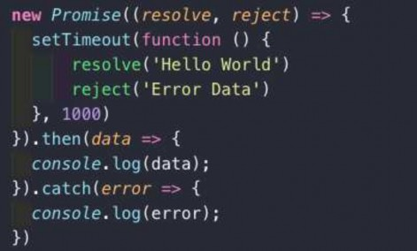
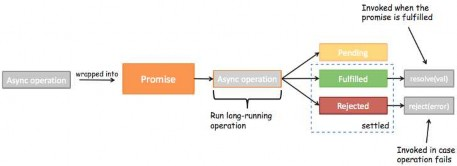
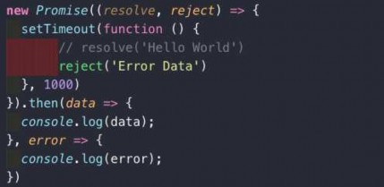
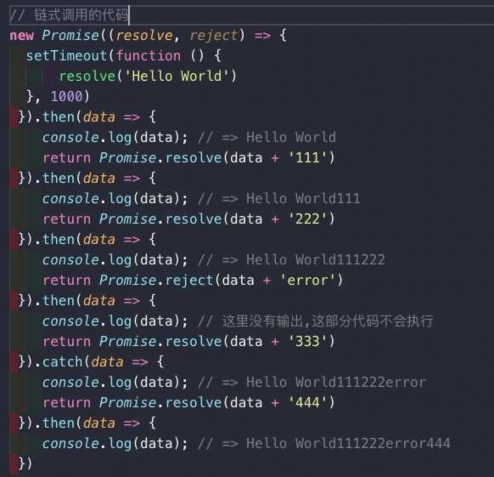
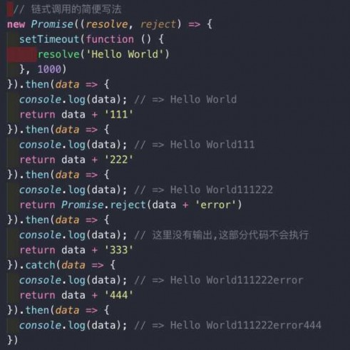

王红元
微博：coderwhy
微信：372623326


 什么是Promise呢？
什么是Promise呢？
ES6中一个非常重要和好用的特性就是Promise
但是初次接触Promise会一脸懵逼，这TM是什么东西？
看看官方或者一些文章对它的介绍和用法，也是一头雾水。
Promise到底是做什么的呢？
Promise是异步编程的一种解决方案。
那什么时候我们会来处理异步事件呢？
一种很常见的场景应该就是网络请求了。
我们封装一个网络请求的函数，因为不能立即拿到结果，所以不能像简单的3+4=7一样将结果返回。
所以往往我们会传入另外一个函数，在数据请求成功时，将数据通过传入的函数回调出去。
如果只是一个简单的网络请求，那么这种方案不会给我们带来很大的麻烦。
但是，当网络请求非常复杂时，就会出现回调地狱。

OK，我以一个非常夸张的案例来说明。

 网络请求的回调地狱
网络请求的回调地狱
我们来考虑下面的场景(有夸张的成分)：
我们需要通过一个url1从服务器加载一个数据data1，data1中包含了下一个请求的url2
我们需要通过data1取出url2，从服务器加载数据data2，data2中包含了下一个请求的url3
我们需要通过data2取出url3，从服务器加载数据data3，data3中包含了下一个请求的url4

发送网络请求url4，获取最终的数据data4
上面的代码有什么问题吗？
正常情况下，不会有什么问题，可以正常运行并且获取我们想要的结果。
但是，这样额代码难看而且不容易维护。
我们更加期望的是一种更加优雅的方式来进行这种异步操作。
如何做呢？就是使用Promise。

Promise可以以一种非常优雅的方式来解决这个问题。

 定时器的异步事件
定时器的异步事件

我们先来看看Promise最基本的语法。
这里，我们用一个定时器来模拟异步事件：
假设下面的data是从网络上1秒后请求的数据
console.log就是我们的处理方式。

这是我们过去的处理方式，我们将它换成Promise代码
这个例子会让我们感觉脱裤放屁，多此一举
首先，下面的Promise代码明显比上面的代码看起来还要复
杂。
其次，下面的Promise代码中包含的resolve、reject、then、
catch都是些什么东西？

我们先不管第一个复杂度的问题，因为这样的一个屁大点的程序
根本看不出来Promise真正的作用。

 定时器异步事件解析
定时器异步事件解析
我们先来认认真真的读一读这个程序到底做了什么？
new Promise很明显是创建一个Promise对象
小括号中((resolve, reject) => {})也很明显就是一个函数，而且我们这里用的是之前刚刚学习过的箭头函数。
但是resolve, reject它们是什么呢？
我们先知道一个事实：在创建Promise时，传入的这个箭头函数是固定的（一般我们都会这样写）
resolve和reject它们两个也是函数，通常情况下，我们会根据请求数据的成功和失败来决定调用哪一个。
成功还是失败？
如果是成功的，那么通常我们会调用resolve(messsage)，这个时候，我们后续的then会被回调。
如果是失败的，那么通常我们会调用reject(error)，这个时候，我们后续的catch会被回调。

OK，这就是Promise最基本的使用了。

 Promise三种状态
Promise三种状态

首先, 当我们开发中有异步操作时, 就可以给异步操作包装一个
Promise
异步操作之后会有三种状态
我们一起来看一下这三种状态:
pending：等待状态，比如正在进行网络请求，或者定时
器没有到时间。

fulfill：满足状态，当我们主动回调了resolve时，就处于
该状态，并且会回调.then()

reject：拒绝状态，当我们主动回调了reject时，就处于该
状态，并且会回调.catch()

 Promise链式调用
Promise链式调用

我们在看Promise的流程图时，发现无论是then还是catch都可
以返回一个Promise对象。
所以，我们的代码其实是可以进行链式调用的：
这里我们直接通过Promise包装了一下新的数据，将Promise对
象返回了
Promise.resovle()：将数据包装成Promise对象，并且在
内部回调resolve()函数

Promise.reject()：将数据包装成Promise对象，并且在内
部回调reject()函数

 链式调用简写
链式调用简写

简化版代码：
如果我们希望数据直接包装成Promise.resolve，那么在
then中可以直接返回数据
注意下面的代码中，我讲return Promise.resovle(data)改
成了return data

结果依然是一样的